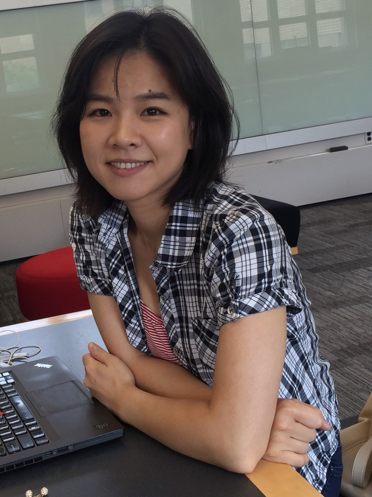

|  | Shunyuan
Zhang I'm a fourth-year Ph.D. student in Marketing/Business Technology at the Tepper School of Business, Carnegie Mellon University. |
Research Interests
Sharing Economy, Crowdsourcing, Social Media
Digital Marketing, Quantitative Marketing
Methods
Econometrics (Structural Modeling, Dynamic Models, Bayesian Inference)
Machine Learning (Deep Learning, Computer Vision, Natural Language Processing)
Working Papers
Shunyuan Zhang, Nitin Mehta, Param Vir Singh, Kannan Srinivasan, 2018, "Do Lower-Quality Images Lead to Greater Demand on Airbnb?,” Work in Progress.
Shunyuan Zhang, Dokyun Lee, Param Vir Singh, Kannan Srinivasan, 2017, " How Much Is an Image Worth? Airbnb Property Demand Estimation Leveraging Large Scale Image Analytics,” Under 3rd round of review at Management Science.
Shunyuan Zhang, Param Vir Singh, Anindya Ghose, 2016, "A Structural Analysis of the Role of Superstars in Crowdsourcing Contests," Forthcoming at Information Systems Research.
Shunyuan Zhang, Dokyun Lee, Param Vir Singh, Tridas Mukhopadhyay , 2018, “Demand Interactions in Sharing Economies: Evidence from a Natural Experiment Involving Airbnb and Uber/Lyft,” Revising for 2nd round of review at Management Science.
Shunyuan Zhang, Nitin Mehta, Param Vir Singh, Kannan Srinivasan, 2018, "Who Benefit from Artificial Intelligence? An Empirical Analysis of Returns to Smart Pricing Algorithm on Airbnb,”Preparing for submission.
Conference/Workshop Presentations & Publications
Shunyuan Zhang, Nitin Mehta, Param Vir Singh, Kannan Srinivasan,2018, "Can Bad Images Lead to Greater Demand on Airbnb?," INFORMS Marketing Science Conference ,Philadelphia, PA.
Shunyuan Zhang, Dokyun Lee, Param Vir Singh, Kannan Srinivasan,2018, "How Much is an Image Worth? Airbnb Property Demand Analytics Leveraging A Scalable Image Classification Algorithm," INFORMS Marketing Science Conference ,Philadelphia, PA.
Shunyuan Zhang, Param Vir Singh, Anindya Ghose, 2015, "Analyzing the Role of Superstars in Crowdsourcing Contests: A Structural Model," Conference on Information Systems and Technology (CIST), Philadelphia, PA.
Shunyuan Zhang, Dokyun Lee, Param Vir Singh, Kannan Srinivasan, 2016, “How Much Is An Image Worth? An Empirical Analysis of Property’s Image Aesthetic Quality on Demand at AirBNB”, International Conference in Information Systems (ICIS), Dublin, Ireland.
Shunyuan Zhang, Dokyun Lee, Param Vir Singh, Kannan Srinivasan, 2016, “Professional versus Amateur Images: Investigating Differential Impact on Airbnb Property Demand”, Conference on Information Systems and Technology (CIST), Nashville, TN. [WINNER BEST STUDENT PAPER AWARD AT CIST 2016]
Shunyuan Zhang, Dokyun Lee, Param Vir Singh, Kannan Srinivasan, 2016, "Image Feature Extraction and Demand Estimation on Airbnb: A Deep Learning Approach", Workshop on Information Systems and Economics (WISE), Dublin, Ireland.
Shunyuan Zhang,Dokyun Lee, Param Vir Singh, Tridas Mukhopadhyay, 2017,"The Sharing Effects of Sharing Economy: Evidence from a Natural Experiment Involving Airbnb and Uber/Lyft," Conference on Information Systems and Technology (CIST), Houston, TX.
Shunyuan Zhang,Dokyun Lee, Param Vir Singh, Tridas Mukhopadhyay, 2017,"Analyzing the Demand Interaction in Sharing Economy", Workshop on Information Systems and Economics (WISE), Seoul, Korea.
Awards, Fellowships and Grants
ISMS Doctoral Consortium Fellow, 2018
Dipankar and Sharmila Chakravarti Doctoral Award, 2018
ISMS Doctoral Consortium Fellow, 2017
Winner of Best Student Paper at CIST, 2016
Dean's Research Fund, 2016
William Larimer Mellon Fellowship, Carnegie Mellon University, 2014-2019
Programming Skills
Matlab, Python, SQL, PHP, R
Teaching Experience
Pricing Strategy (TA 2016), Tepper School of Business, by Kaifu Zhang
Digital Marketing and Social Media Strategy (TA 2017), Tepper School of Business, by Param Vir Singh
Topics in Deep Learning (TA 2017), School of Computer Science (MLD), by Ruslan Salakhutdinov
Strategic Information Technology (TA 2014), Tepper School of Business, by Tridas Mukhopadhyay
Education
Bachelor of Science in Physics, 2008, University of Science and Technology of ChinaPhD in Physics, 2014, Department of Physics and Astronomy, Purdue University
PhD Student in Business Technologies, 2014- , Tepper School of Business, Carnegie Mellon University.